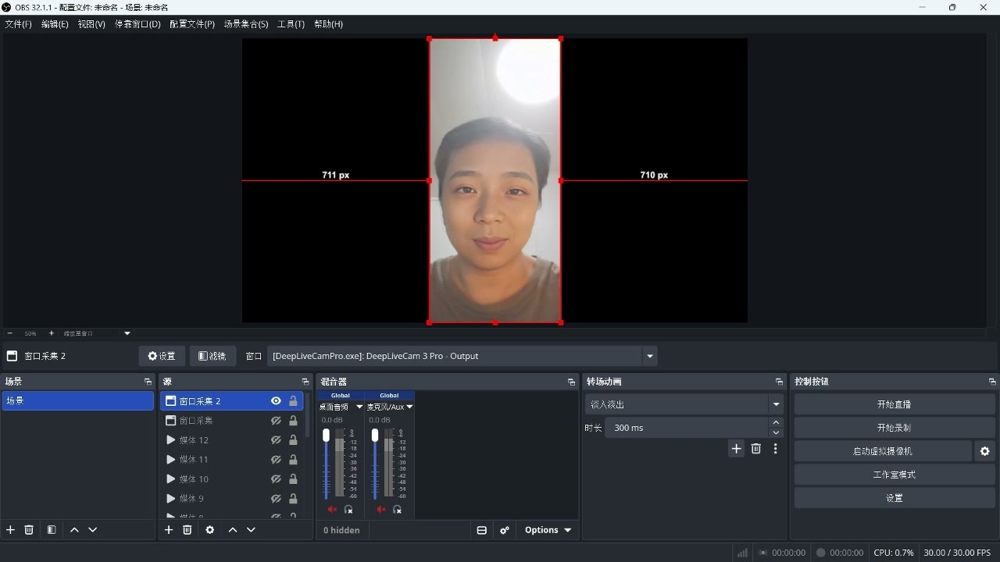

实用教程
从第一张照片，到直播和视频通话
结合中文实际录屏和操作步骤，按你要传送的画面选择教程。
 入门操作
入门操作01 · 约 4 分钟 · 演示 57 秒
第一次实时换脸与视频通话
从选择照片、启动预览开始，通过 DLC-Pro 虚拟摄像头把处理后的画面传入 Telegram 或 WhatsApp。
查看教程
直播设置02 · 约 5 分钟 · 演示 26 秒
在 OBS 中只采集换脸输出窗口
捕捉 DeepLiveCam 的独立输出窗口，组合 OBS 场景，再用于直播或视频通话；同时说明 Windows 11 下的虚拟摄像头接入方式。
查看教程 进阶流程
进阶流程03 · 约 5 分钟 · 演示 1 分 22 秒
用 OBS 播放视频，换脸后接入 Telegram
在 OBS 中播放本地视频，把 OBS Virtual Camera 作为 DeepLiveCam 的输入，再通过 DLC-Pro 将换脸结果传入 Telegram。
查看教程演示视频使用中文界面，录制版本较早，部分按钮名称和位置与当前版本有所不同。